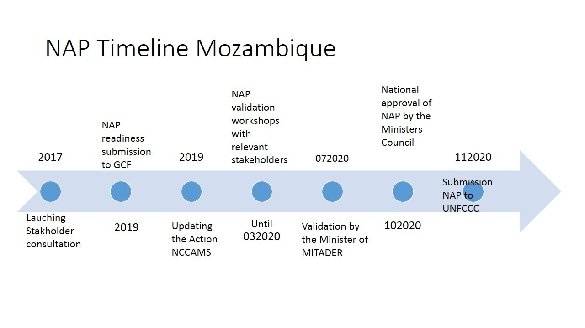

Chapter 4 Vision for adaptation for the country
Goal and objectives of the NAP Regulatory frameworks and institutional arrangements for adaptation a. Governance structures/Institutions Insert from National Climate Change Adaptation and Mitigation strategy
- Plans for integrating adaptation and NAPs in development planning and plans
NDC PQG 20
Processes supporting the development of the National Adaptation Plan (could be placed after national circumstances) a. Description of decision-making processes and how adaptation options are prioritized b. Multi stakeholder engagement process MITADER (coordinator), MEF (National Directorate of Planning and budgeting and Directorate of M&E), MASA (DINAS, DNV,DINEA, IIAM,INDR); MOPHRH (DNGRH, Direcção De Obras Publicas); MAEF (INGC, Local Administrations), MGCAS (DINAS), Research institutions and Universities, Civil Society and Private Sector.
- National roadmap and framework

Guiding principles (science, ITK, gender, transparency and participation, etc.)
Process of identification/stocktaking of desirable and available information
Climate and socio economic data and information
Current assessments: Exploring possibilities for further assessments
Policies, strategies, plans
Existing initiatives on adaptation
library(flextable)
library(magrittr)
initiatives<-readxl::read_excel("Tables_from_NAP.xlsx",
sheet = "adpt-initiatives")
t1<-flextable(initiatives,col_keys = names(initiatives),
cwidth = 3,
cheight = 0.01,
defaults = list(),
theme_booktabs())
t2<-fontsize(t1,part = 'all', size = 8)
t3<-border_outer(t2,part = 'all', border = NULL)
t4<-border_inner(t3,part = 'all', border = NULL)
t5<-bold(t4,part='header')
t5Nome do Projecto | Objectivos | Resultados esperados | Período de Implementação | Orçamento | Fonte de financiamento | Instituição implementadora | Comentários |
Melhorando a Resiliência Climática em Moçambique - MERCIM | 136,115,776 | ||||||
LoCal | |||||||
Escola na Machamba do Camponês | |||||||
SUNRED | |||||||
HELPCODE | |||||||
ICAT | |||||||
Conservation Areaa for Biodiversity Conservation and Development II – Additional Financing | FNDS | O financiamento do GEF é se $23,115,776 | |||||
Towards Sustainable Energy for All in Mozambique: Promoting Market-Based Dissemination of Integrated Renewable Energy System for Productive Activities in Rural Area | |||||||
Scalling Up local adaptation and climate-risk informed planning resilient livelihoods | Em formulacao |
- Resource mobilization for the process